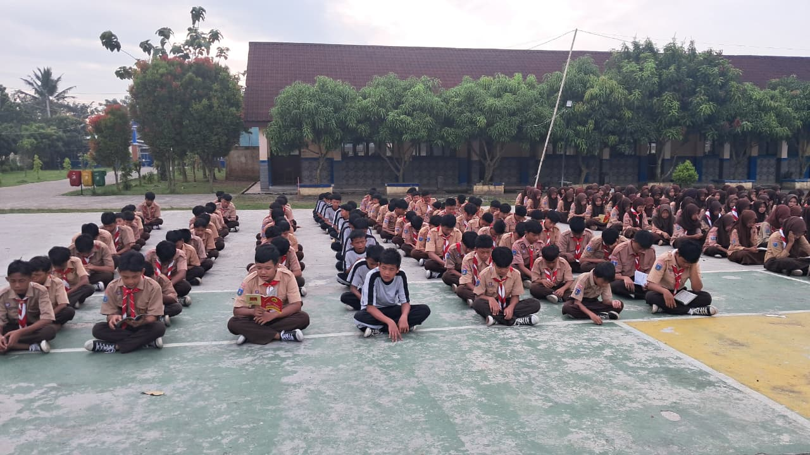

Kegiatan Tadarus Pagi Siswa SMP Negeri 2 Kresek
15 April 2026


Salah satu kegiatan pembiasaan yang rutin dilaksanakan di SMP Negeri 2 Kresek adalah kegiatan tadarus Al-Qur'an bersama surat-surat dalam Juz 30. Kegiatan ini merupakan bagian dari program pembinaan karakter religius yang bertujuan untuk menumbuhkan keimanan dan ketakwaan peserta didik kepada Allah SWT sejak dini.
Kegiatan tadarus dilaksanakan secara rutin setiap hari Rabu dan Kamis selama kurang lebih 30 menit, dimulai pada pukul 07.00 sampai dengan 07.30 WIB, sebelum kegiatan belajar mengajar dimulai. Seluruh peserta didik mengikuti kegiatan dengan tertib dan penuh kekhusyukan.
Selama kegiatan berlangsung, peserta didik dibimbing oleh guru Pendidikan Agama Islam (PAI) serta didampingi oleh bapak dan ibu guru SMP Negeri 2 Kresek. Melalui kegiatan ini diharapkan nilai-nilai religius, kedisiplinan, serta akhlak mulia dapat terus tertanam dalam kehidupan sehari-hari peserta didik.
← Kembali